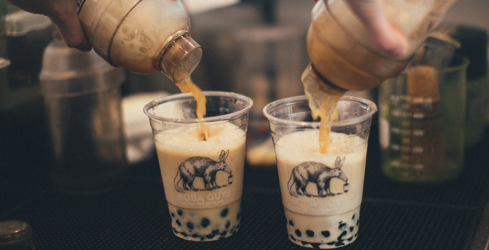
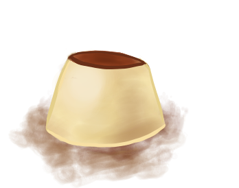
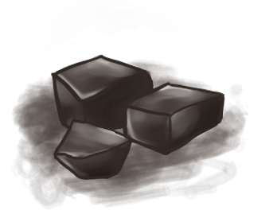

...
Origins of Boba
"Bubble tea (also known as pearl milk tea, bubble milk tea, or boba) (Chinese: 珍珠奶茶; pinyin: zhēnzhū nǎichá, 波霸奶茶; bōbà nǎichá) is a Taiwanese tea-based drink invented in Tainan and Taichung in the 1980s.[1] Recipes contain tea of some kind, flavors of milk, and sugar (optional). Toppings, known as "pearls", such as chewy tapioca balls (also known as pearls or boba), popping boba, fruit jelly, grass jelly, agar jelly, and puddings are often added. Ice-blended versions are frozen and put into a blender, resulting in a slushy consistency.[2] There are many varieties of the drink with a wide range of flavors. The two most popular varieties are black pearl milk tea and green pearl milk tea." -Wikipedia

Tapioca Pearls
formed from a mixture of water and tapioca starch extracted from the cassanova root. Boiling and then soaking in a honey/sugar water mixture will result in a soft sweet exterior and a chewy, sticky interior.

Egg Pudding
A sweet and jiggly custard dessert cultivated from eggs, sugar, and gelatin. Pairs well with milk teas and comes in many other flavors ranging from matcha to mango!

Grass Jelly
An asian dessert most commonly served in China, Taiwan, and Southeast Asia, Grass Jelly is slightly sweet but bitter. Best served in milk teas.